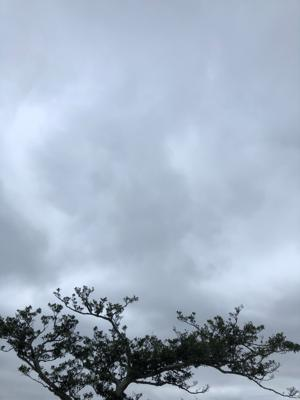
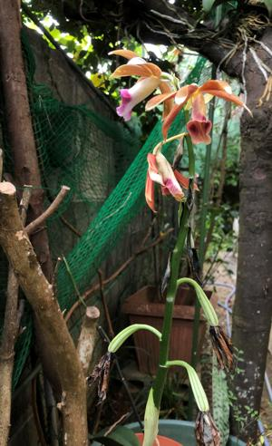
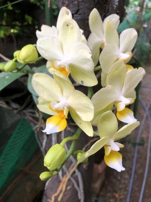

うるがいの話 ある日
最新: オークション落札【うるがいの話 ある日】とは 一日だけのプログです
『うるがいの話』の最新一日だけのプログで、通信料が少なく経済的だ。カニの画像をクリックすると全ての日付が載る『うるがいの話』サイトを表示します
|
|
【うるがいの話】 うるがい(ｳﾙｶﾞｲ urugai)とは、『もずくがに』の名前でとても大きくなります。 |
|---|---|
|
|
【カミマヤーの話】 猫のことを方言でマヤーといいます。カミマヤー（kamimayaa）とは、神の猫のことです。 |
|
【たながぁの音楽】 たながぁ（ﾀﾅｶﾞｰ tanagaa）とは手長えびのことで、何種類かあり大きいのは車 エビぐらいになります。 |

|
【ぶながぁの話】 ぶながぁ(ﾌﾞﾅｶﾞｰ bunagaa)とは、赤い髪の毛、赤い身体、そして身長は１ｍ２０ｃｍ ぐらい、川の蟹を食べているの目撃された。場所は沖縄県国頭郡大宜味村のと ある村僕の隣近所に住んでいる爺さんから、聞いた話です。 |
|
|
【ギーマの話】 ギーマ(giima)とは、山原の里山に咲くスズランに似た、 花を付けます。実は食べられます、 気が付くと口の周りが紫になっています。 |
2022年05月16日 (月）オークション落札
16:41
  
数年ぶりにヤフーオークションで落札をする。製品は、『Windows XP Profe
ssional アップグレード 製品版 ServicePack2 version2002』、支払った金
額はコンビニの手数料百円を含み、４千円也。ところで、アップグレード版は
Windows2000 ProfessionalのインストールＣＤがある事だが、果たしてイン
ストールで出来るのだろうかと気になり朝から仮想環境Oracle VM VirtualBox
で遊んでいる（何とかWindows2000をインストール出来た）。２００２に購
入したディスクトップにインストール出来たものの、いまは動かなくなったの
で寂しい思いをしていた。これで、ハードウェアに依存しない仮想環境下で動
作するので何時でも利用できる。ん、本当に使うのか？、・・・分からない。
小雨が降る、寒い一日である（夕方４時で１９度）。５月にここまで気温が下
がったのは記憶にない、台風も来る気配がない。
１６時１２分 ビットコインの総資産 ￥１１、０６２↓